LITTLE TREE vol.2 (2025.6)
記念すべき第二号。柚ちゃんが去り、丁子くんが参加している。僕は頑張って立ち直ろうとしている。とても可哀想だ。 おそらくこのあたりから踊り場のたびに地面を見つめる日々がはじまる。おそらく睡眠時間も十分ではなかった。 とにかく泣いていた。泣きながら走っていた。涙が止まらず文章が読めなくなってしまって、詩を読んでいた。 もう少し僕に勇敢さが備わっていたら、しっかりこのあたりで死んでいたと思う。希望なんてひとつもなかった。 仕方がないので、表紙と裏表紙の絵を自分で描いた。おっちょがヨーロッパ旅行のお土産で買ってきてくれた、カラフルなパステルで描いた。 おそらく40部くらい売れた。買ってくれたみなさん、どうもありがとう。興奮ではなく発狂に突入。 脱線した暴走機関車。屠られるべき豚。壊れてしまったメリー・ゴーランド。
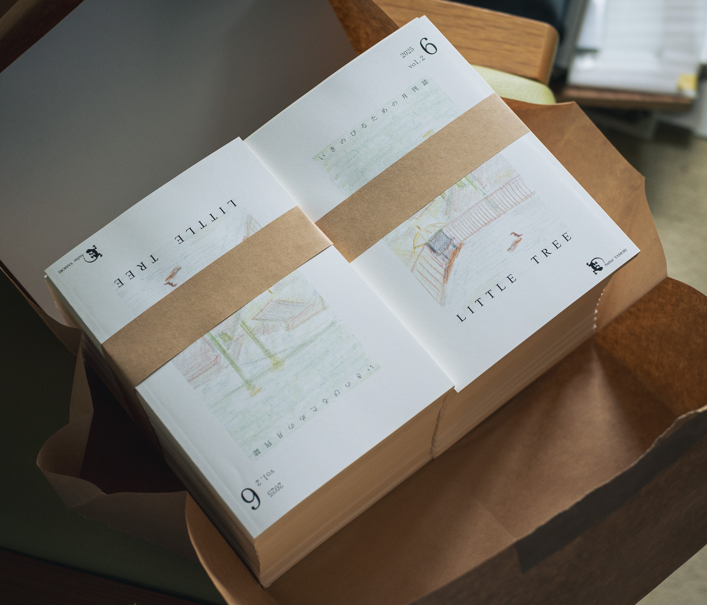


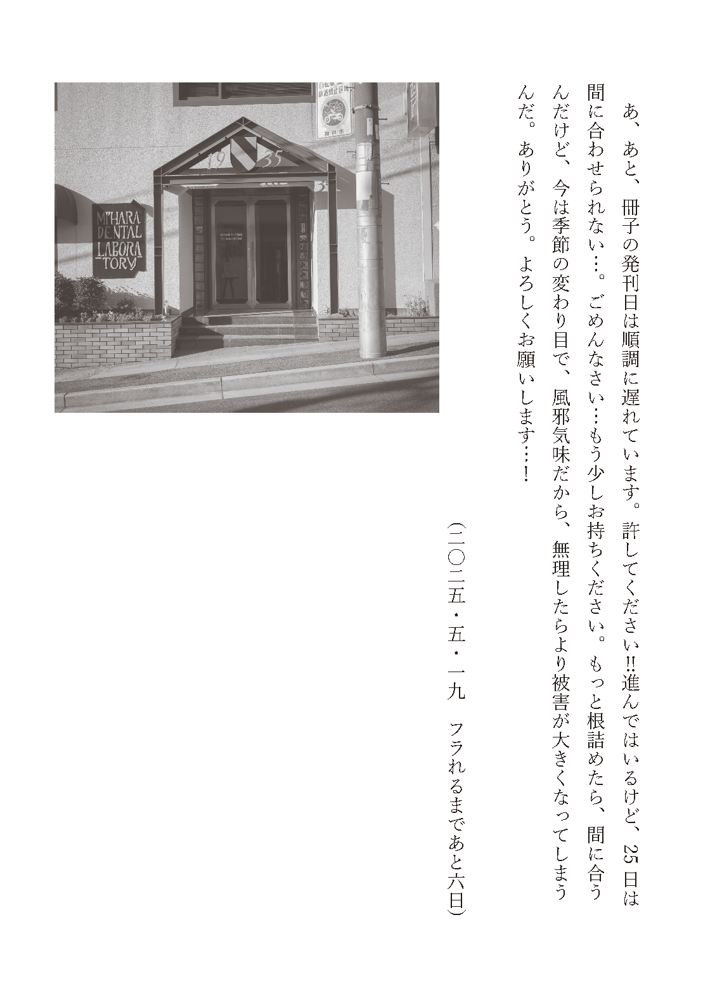
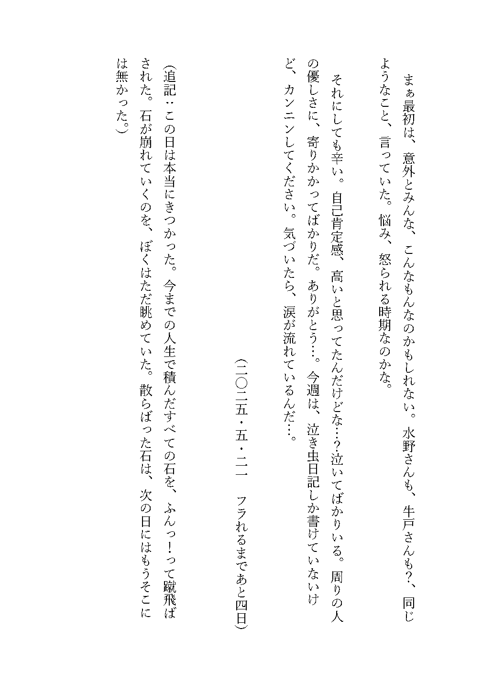
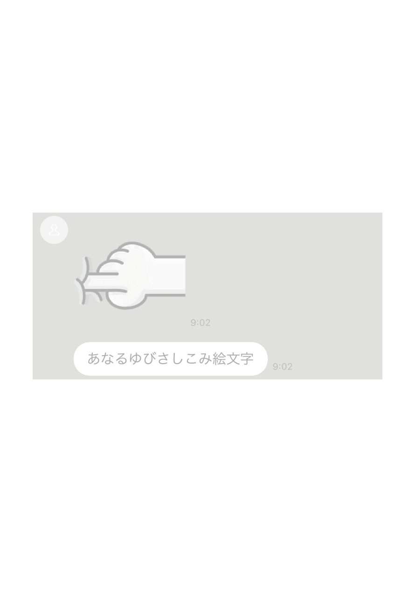

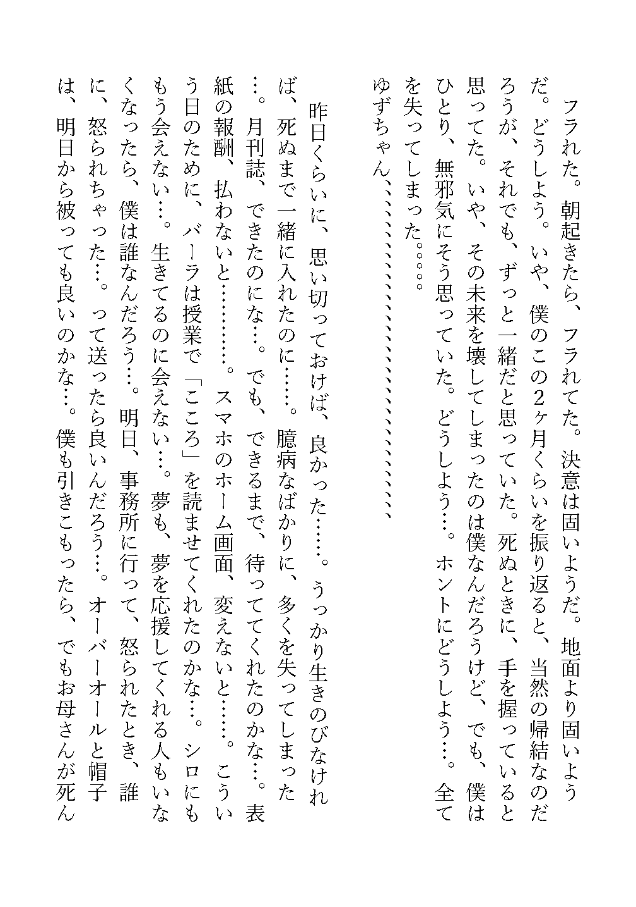
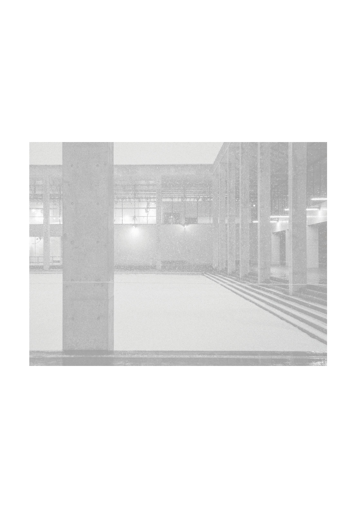

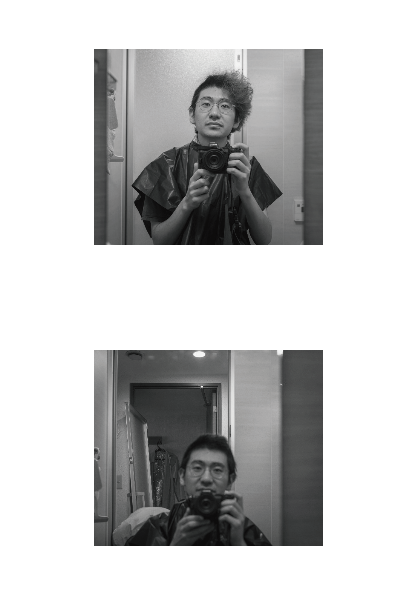
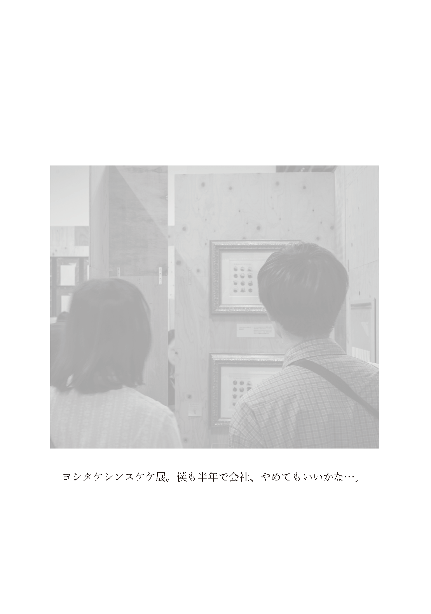

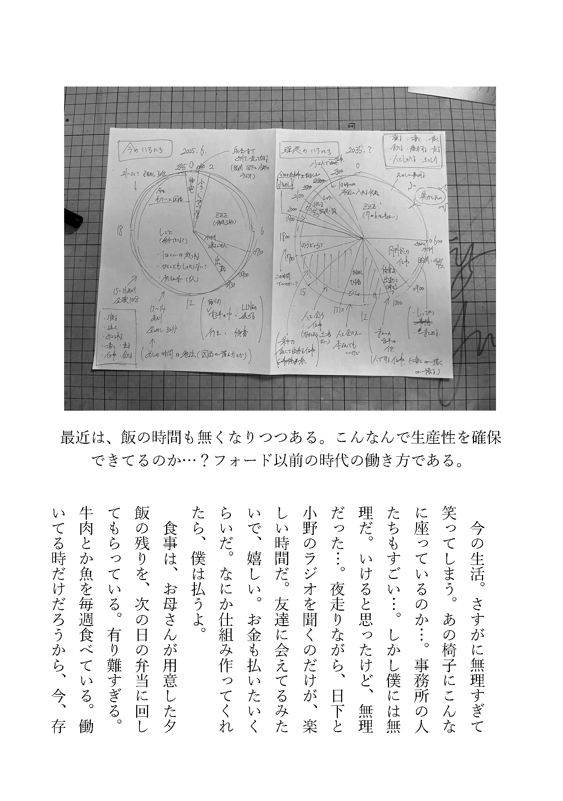
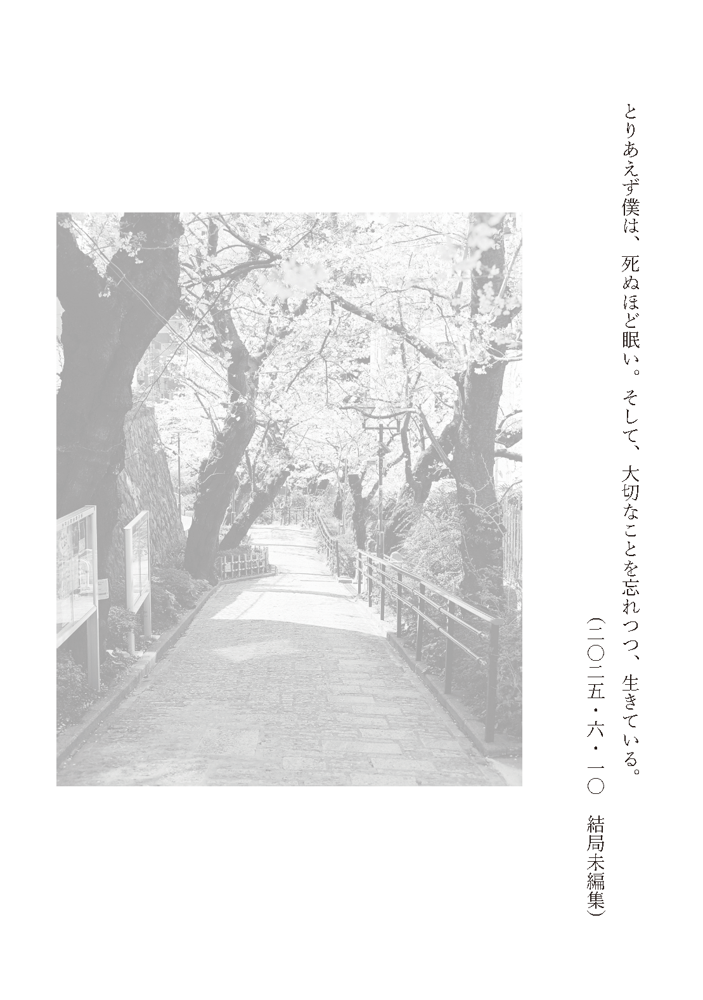
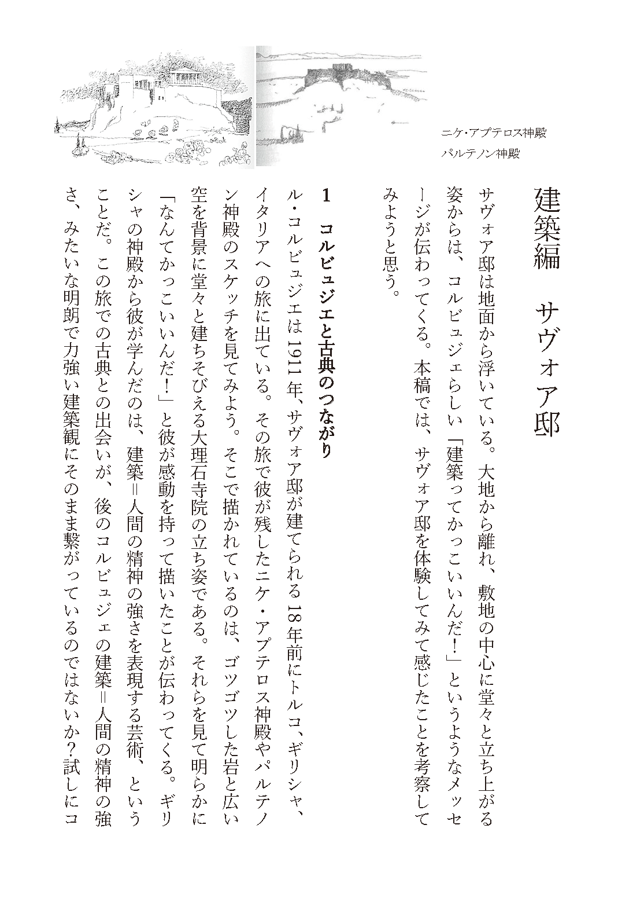
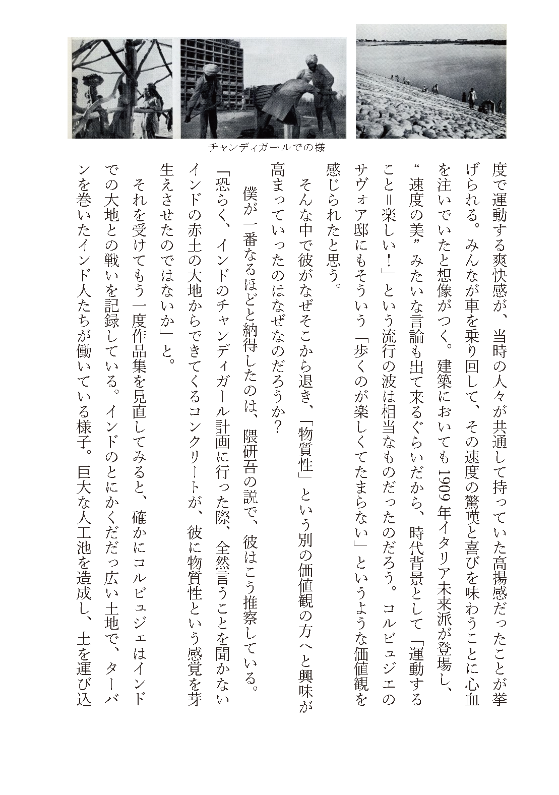

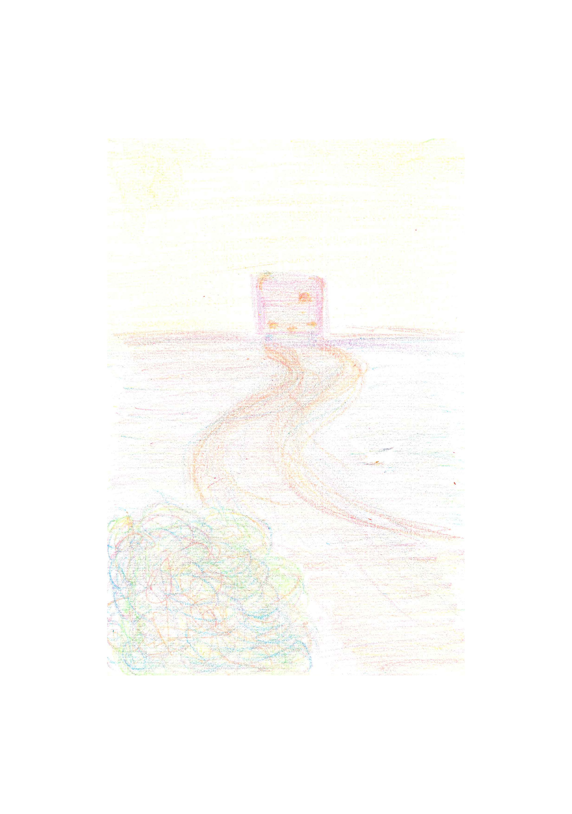